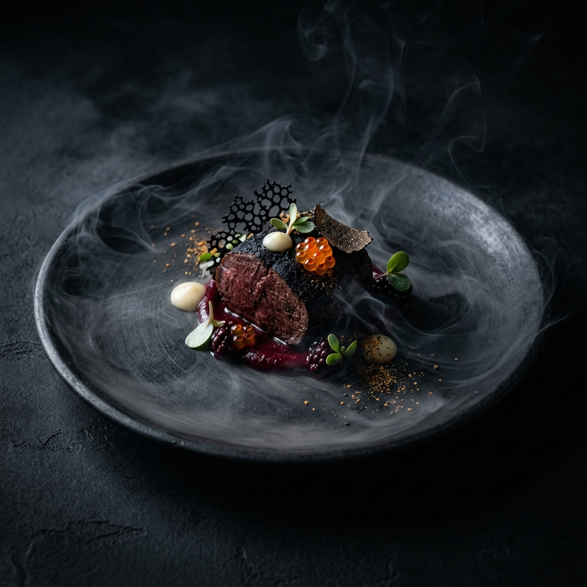
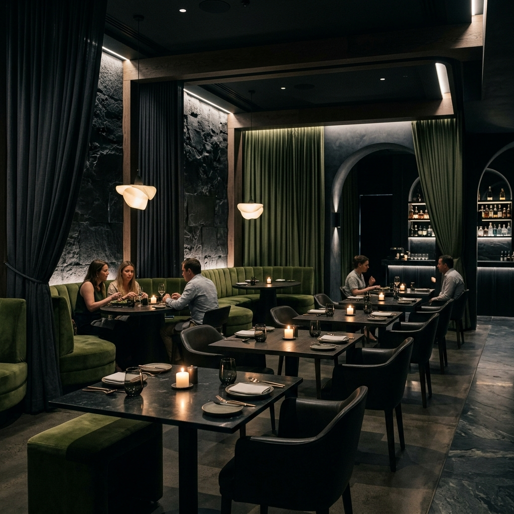

O OAK é uma viagem sensorial profunda. Operamos sob a filosofia do Omakase (deixo aos cuidados do chef), fundindo a técnica milenar asiática com os ingredientes nativos mais puros da Amazônia e do Cerrado.
Não temos cardápio fixo. Nossos 12 pratos mudam diariamente conforme o frescor do que a terra nos oferece a cada manhã.
Apenas 25 lugares por noite. Um ambiente esculpido na meia-luz e na madeira carbonizada.

Nossa adega é composta 100% por rótulos orgânicos e biodinâmicos, selecionados dedo a dedo por nosso Sommelier para criar o pairing perfeito.
Dois turnos impecáveis. O primeiro às 19h e o segundo às 21h30, garantindo que cada mesa receba atenção coreografada.
Sim. Podemos adaptar todo o percurso de 12 tempos, desde que a equipe seja avisada com 48 horas de antecedência no ato da reserva online.
Esporte Fino / Smart Casual. Para manter a atmosfera de luxo do salão, não é permitida a entrada com regatas, bermudas esportivas ou chinelos.
Sim. Contamos com serviço de manobrista exclusivo e seguro na porta do restaurante, disponível a partir das 18h30.
"A melhor experiência gastronômica de São Paulo. Cada prato do Chef é uma obra de arte indescritível e o serviço de vinhos é impecável."
Crítico da Revista Gastronomia SPAbertura de agenda todo dia 1º do mês.
Agendar Reserva Comprar Voucher / Gift Card